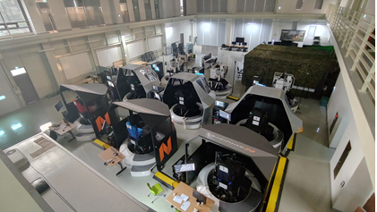
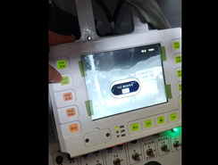
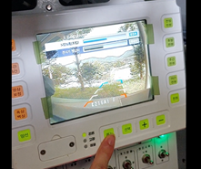

UH-60, F-16, K1A1 VR 시뮬레이터 연구개발. 가상 조종석, 손 추적, 스위치 상호작용, 계기판/조준경, 의자 보정 등 기반 기능을 제작하고 사업을 완료.
2018 - 2022 / C++ / Unigine
VR 플랫폼 연구개발사업 / 화생방정찰차 납품사업
VR 플랫폼 연구개발사업을 완료하며 Unigine 기반 IG/VR 기능과 엔진 활용 경험을 확보했고, 이후 화생방정찰차 납품사업에서 그 기반을 활용해 외부 환경 전시 화면과 조종수 전시기 화면을 개발.
역할 영상 파트 연구원, Unigine 기능 메인 개발
엔진 Unigine
구분 연구개발사업 1건 + 납품사업 1건
훈련 시뮬레이터 납품사업의 영상 파트. 외부 환경 전시 화면, 조종수 전시기 화면, FLIR/NVG, 화면 동기화, 카메라 전환 기능 개발.
연구개발사업에서 확보한 Unigine 분석 경험과 IG/VR 기능 구현 경험을 후속 화생방정찰차 납품사업의 영상 파트 개발에 활용.
프로젝트 구분
01 / 연구개발사업
시뮬레이터 VR 플랫폼 연구개발사업
UH-60, F-16, K1A1을 대상으로 한 VR 시뮬레이터 연구개발. Unigine 엔진을 처음 맡아 분석하고, IG 기능과 VR 기능이 함께 동작하는 영상 시스템 기반을 구성해 사업을 완료.
기간2018.10 - 2020.08
참여영상 파트 3명, 총 약 20명
역할Unigine 관련 기능 메인 개발


- 기본 IG 기능 적용: 객체/뷰 컨트롤, 기상 컨트롤, 천체 컨트롤
- Leap Motion 기반 손 모델 움직임 표현
- 조종석 스위치·버튼 터치/동작 상호작용
- 계기판, 조준경 화면 등 1인칭 내부 조종석 요소 구현
- Vive 컨트롤러를 이용한 6축 의자 화면 부조화 보정
- 손 모델 접촉에 따른 햅틱 장갑 진동 모터 제어
엔진 분석
Unity 사용 경험을 기반으로 생소한 Unigine 엔진 구조, 샘플, 매뉴얼을 확인하며 프로젝트 적용 방식을 정리. 영상 파트의 기본이 되는 IG 기능과 VR 기능을 함께 다루는 방향으로 프로토타입을 구성하고 연구개발사업 완료.
조종석 상호작용
가상 손, 조종석 스위치·버튼 상호작용, 계기판과 조준경 화면을 구현. K1A1 기능에서는 조종수/포수/전차장 시점 전환, 포수·전차장 조준 화면 전환, 포 발사와 명중 체크, 폭파 이펙트를 적용.
02 / 납품사업
화생방정찰차 시뮬레이터 영상 파트 개발
화생방정찰차 훈련 시뮬레이터 납품사업의 영상 파트. 외부 환경 전시 화면과 조종수 전시기 화면을 담당하고, 훈련 요구사항에 맞는 화면 기능을 구현.
기간2020.08 - 2022.02, 납품 완료
참여영상 파트 2명, 모델링 1명
역할요구사항 기능 메인 개발



*조종수 전시기는 실 장비 사진
- 환경 맵 제작: Unigine 에디터 기능 활용
- 실시간 환경 효과와 계절 변화 적용
- 최적화를 위해 지형/지물 LOD와 Imposter 기능 활용
- 요구사항 기능 제작: 계절 변화, 기상 변화, 동물 사체 생성
- 외부 환경 전시 화면과 조종수 전시기 화면 동기화
- 조종수 전시기 UI 생성과 조작, FLIR/NVG 구현
- 기본/전방/후방 카메라 화면 전환
현장 확인
부대 방문 후 실제 장비의 화면 구성과 조작 방식을 확인하고, 기능 기록을 기반으로 조종수 전시기 화면 UI와 조작 방식을 구현.
통합 시험
타 시스템 개발팀과 메시지 통신 협의 및 통합 시험을 진행하고, 마스터 채널과 슬레이브 채널의 화면 동기화를 적용.